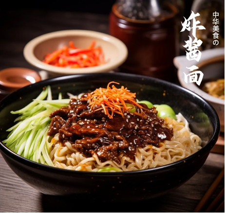

Un classique incontournable de la cuisine pékinoise

Les zhajiangmian sont l’un des plats de nouilles les plus représentatifs de la cuisine traditionnelle de Pékin. C’est aussi un plat très courant sur la table des familles pékinoises. Ce plat trouve son origine dans la culture des nouilles du nord de la Chine et s’est progressivement développé pour devenir l’une des spécialités emblématiques de la capitale.
À Pékin, beaucoup de familles préparent encore les zhajiangmian à la maison. Ainsi, ce plat n’est pas seulement une nourriture, mais aussi un symbole de la vie familiale et de la mémoire urbaine. Pour de nombreux habitants de Pékin, un bol de zhajiangmian bien chaud représente le goût le plus familier et le plus réconfortant de leur enfance.
La préparation des zhajiangmian se compose généralement de trois éléments principaux : les nouilles, la sauce et les garnitures de légumes.
Première étape : préparer les nouilles
Traditionnellement, les zhajiangmian utilisent des nouilles faites à la main.
On mélange de la farine et de l’eau pour former une pâte.
La pâte est ensuite pétrie plusieurs fois afin de la rendre élastique.
Ensuite, on étale la pâte et on la découpe en longues nouilles.
Enfin, les nouilles sont cuites dans l’eau bouillante.
Deuxième étape : préparer la sauce (zhajiang)
On fait revenir du porc haché dans une poêle,
puis on ajoute de la pâte de soja fermentée ou de la sauce sucrée (tianmianjiang).
La sauce mijote doucement afin que la viande et la sauce se mélangent parfaitement.
Troisième étape : préparer les légumes
On met d’abord les nouilles dans un bol, puis on ajoute la sauce zhajiang et les légumes. Ensuite, on mélange bien avec des baguettes.
Le résultat est un mélange harmonieux : les nouilles sont fermes et élastiques, la sauce est riche et parfumée, et les légumes apportent une touche fraîche et croquante.